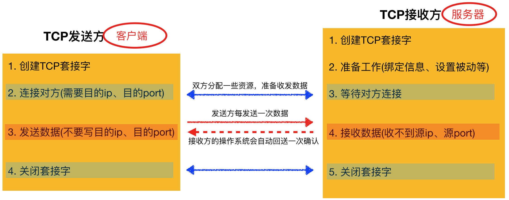
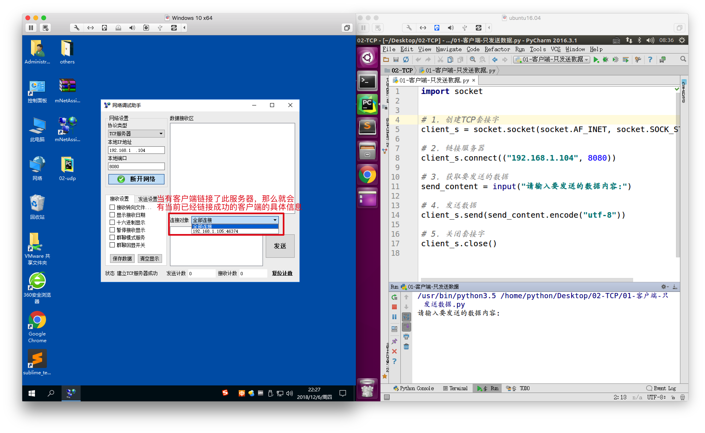
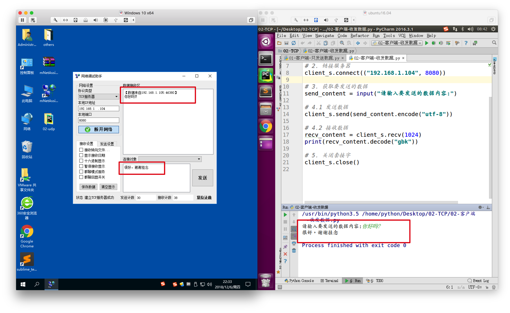

TCP客户端
1. 引入
为了区分，被服务的一方 和 提供服务的一方，网络中有客户端、服务器。
TCP客户端的代码流程与TCP服务器的代码流程不一样，因此需要单独学习
2. 区分客户端、服务器
之前有一个段子：
一个顾客去饭馆吃饭，这个顾客要点菜，就问服务员咱们饭店用客户端么，然后这个服务员非常客气的说道：先生 我们饭店不用客户端，我们直接送到您的餐桌上
如果，不学习网络的知识 说不定也会发生那样的笑话 ，哈哈
客户端：
需要服务的一方，例如我们用浏览器上个，浏览器帮助我们向远程的一台电脑发送请求接收数据，以及展示效果等，此时浏览器就是客户端
服务器(端)：
就是提供服务的一方，例如玩游戏时，需要登录的服务器
3. 构建TCP客户端流程
试想玩在线游戏的时候的流程：
- 打开电脑
- 链接游戏服务器登录
- 玩游戏
- 退出游戏
TCP的客户端的实现过程很类似玩游戏的流程
逻辑顺序如下：
- 创建一个TCP套接字（套接字不区分客户端、服务器）
- 链接服务器
- 向服务器发送数据、接收来自服务器的响应数据
- 断开链接

4. TCP客户端示例代码
4.1 只发送数据的示例
from socket import *
# 1. 创建socket
tcp_client_socket = socket(AF_INET, SOCK_STREAM)
# 2. 链接服务器
tcp_client_socket.connect(("192.168.1.104", 8080))
# 提示用户输入数据
send_data = input("请输入要发送的数据：")
# 3. 向服务器发送数据
tcp_client_socket.send(send_data.encode("utf-8"))
# 4. 关闭套接字
tcp_client_socket.close()

当客户端发送完毕数据后，它立刻调用了close，即关闭了这个套接字，那么意味着双方之间的链接就断开了，因此服务器就不能向这个客户端发送数据
4.2 发送、接收数据的示例
import socket
# 1. 创建TCP套接字
client_s = socket.socket(socket.AF_INET, socket.SOCK_STREAM)
# 2. 链接服务器
client_s.connect(("192.168.1.104", 8080))
# 3. 获取要发送的数据
send_content = input("请输入要发送的数据内容:")
# 4.1 发送数据
client_s.send(send_content.encode("utf-8"))
# 4.2 接收数据
recv_content = client_s.recv(1024)
print(recv_content.decode("gbk"))
# 5. 关闭套接字
client_s.close()

在客户端发送数据之后，因为它调用了recv，意味着要等待服务器发送数据，如果服务器没有发送它会在这里进行堵塞，直到服务器发送数据过来为止；在客户端调用close之前，服务器随时都可以进行发送数据
5. 小总结
(一). TCP客户端的流程：
- 创建套接字
- 链接服务器
- 发送/接收数据
- 关闭套接字
(二). 虽然在学习TCP通信的过程中说：当收到数据后需要给对方发送确认消息，但那时操作系统做的事情，咱们编写的代码不需要确认，只管收发数据即可